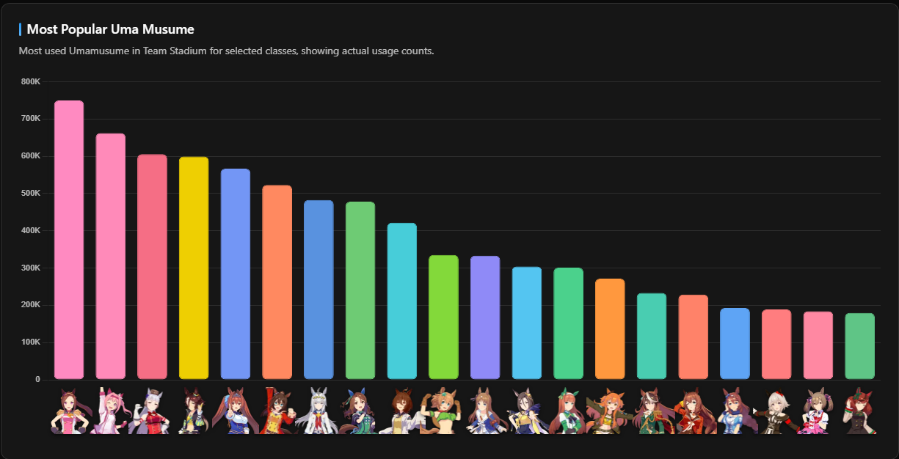
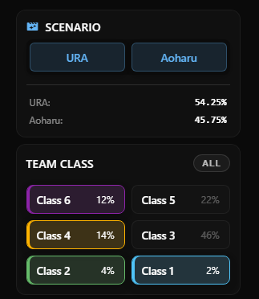
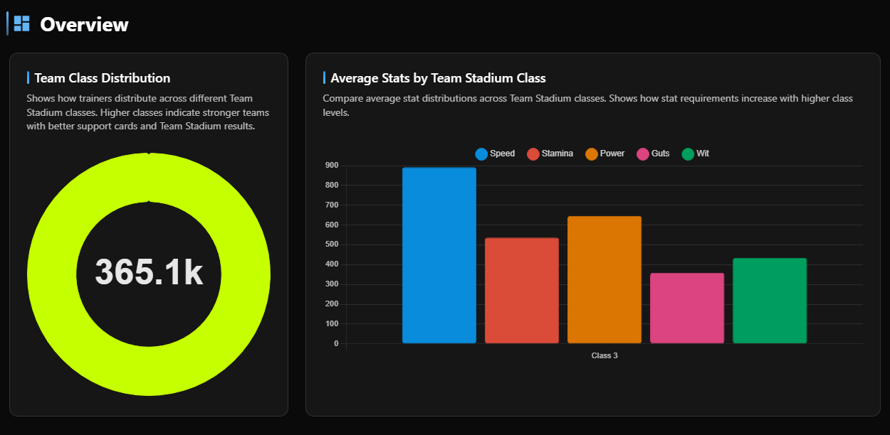
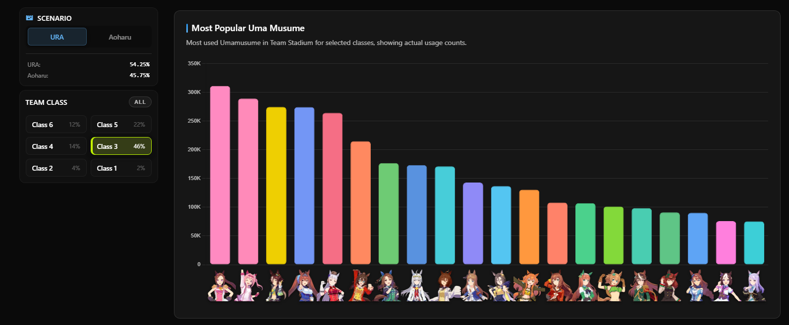
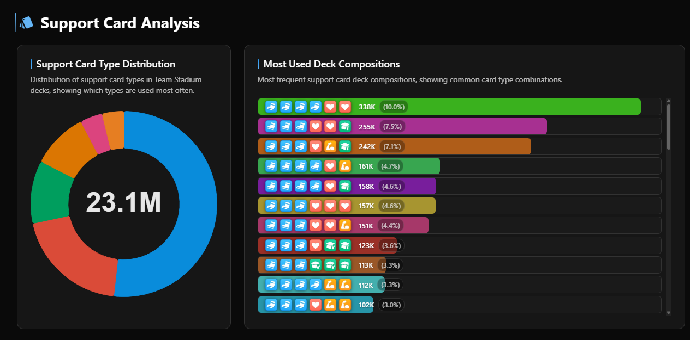

IT Major | Computer Science Minor
Hi! I'm a college senior studying IT and computer science. I hope this semester goes well!
uma.moe is a community run and built data base for the game Umamusume: Pretty Derby. What is Umamusume Pretty Derby? It is a game where you train horses (in the form of anime girls). I chose this visualization because I personally play Umamusume Pretty Derby and I wanted to learn more about this amazing tool!

The main view showing Most Popular Uma Musume across all classes, with character portraits along the x-axis.
The data is sourced by the community. However, we must keep in mind that this is very biased towards people that actually submit their data via the tool. This data is based on Team Stadium which is a gamemode that puts trainers against other trainers's trained umas (horses). As of today (4/22/2026) the tool tracks over 23 million support card entries across roughly 22 million Uma Musume from 1.8 million active users
This tool is aimed towards players that have a basic grasp of the game but want to improve their builds so that they can compete at higher levels!

The filter sidebar lets users narrow data by training scenario and competitive class tier. Class 3 makes up 46% of all submissions.
The tool lets users explore questions like:
You can filter for these questions by going through the sidebar filters on the left!

Filtering to Class 3 in the URA scenario reveals Sakura Bakushin O leading with ~310K usages.

The Average Stats by Team Stadium Class chart shows Speed (~870) far ahead of all other stats in Class 3.
Example insight: If you filter to Class 3, Sakura Baskushin O is the most popular by far as well speed being the most popular trait!
I'd say the character face on the popularity chart is the nicest touch as it gives you facial recognition instead of just text!

The Most Used Deck Compositions chart uses icon sequences rather than text to represent card type combinations.
Most used deck is the best tool here I think. This is so newer players can understand which cards to gacha for.
On another note though, colors on the popularity chart dont really corrspond to anything. They should color code it to either what position they run or what type of runner they are. This is so that newer players can understand which umas dominate which categories and build decks accordingly.
There's no legend for the deck composition system. There should be a small and simple one for easy accessibility.
Any future class projects will be put here!
Email: stevenlin102360@gmail.com
GitHub: github.com/slin05